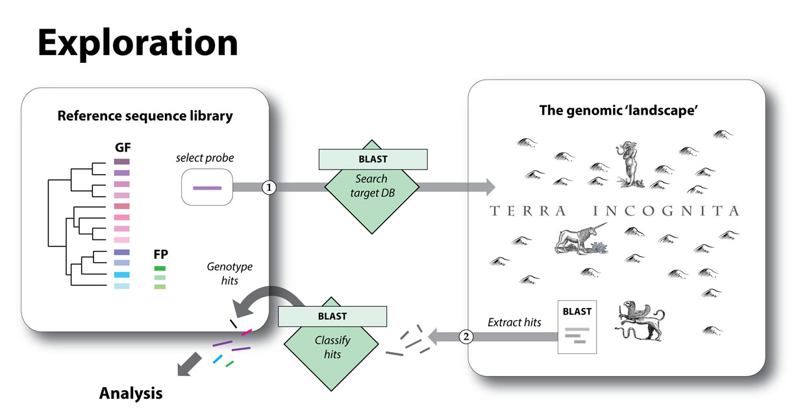

Structure of a similarity search-based screen
Screening entails two stages:
- Setting up and running similarity searches.
- Analysing screening output
This process can be iterative, involving several rounds of screening and analysis. Often, analysis of screening results reveals new information that can be used to design more informative or comprehensive screens.
Part 1. Setting up and running an in silico screen
The 'reference sequence library' is a curated set of sequences relevant to the genome feature(s) under investigation). Usually this will consist of:
- A set of conserved DNA or polypeptide sequences derived from the genome feature of interest.
However, depending on the kind of investigation is performed, it may also contain :
- Conserved genome features that do not derive from the genome feature under investigation, but which can provide useful information about the locus in which that genome feature occurs.
- Representatives of genome features that are not relevant to the investigation, but are sufficiently similar to them in sequence to generate 'false positive' hits in the screen.

Schematic representation of the in silico screening process. The genome features being investigated in this case are a family of related genes (the phylogeny shows the relationships between different gene variants, which are represented by different colors). In addition, the library contains three sequences representing genome features distinct that are NOT being investigated, but that are understood a piori to be a source of false positive (FP) hits.
In step (1) a sequence from the reference library is selected and used as a 'probe' or 'query' in a BLAST-based search of a chosen target database. In step (2), sequences identified in this search are extracted and classified via BLAST-based comparison to the reference library. These searches provides a way to effectively 'delve in' to genomic databanks and recover related sequences and as such, they provide a means to survey unmapped regions of the genomic 'landscape'.
Part 2. Analysing screening output
In DIGS, a similarity search-based screening pipeline is linked to a relational database management system (RDBMS), and the outputs of screening are captured in a project-specific relational database.
This approach not only provides a convenient and robust basis for implementing systematic, automated screens that proceed in an efficient, non-redundant way, it also allows screening data to be interrogated using structured query language (SQL) - a well-established, powerful approach for querying relational databases.

Analysing screening output.